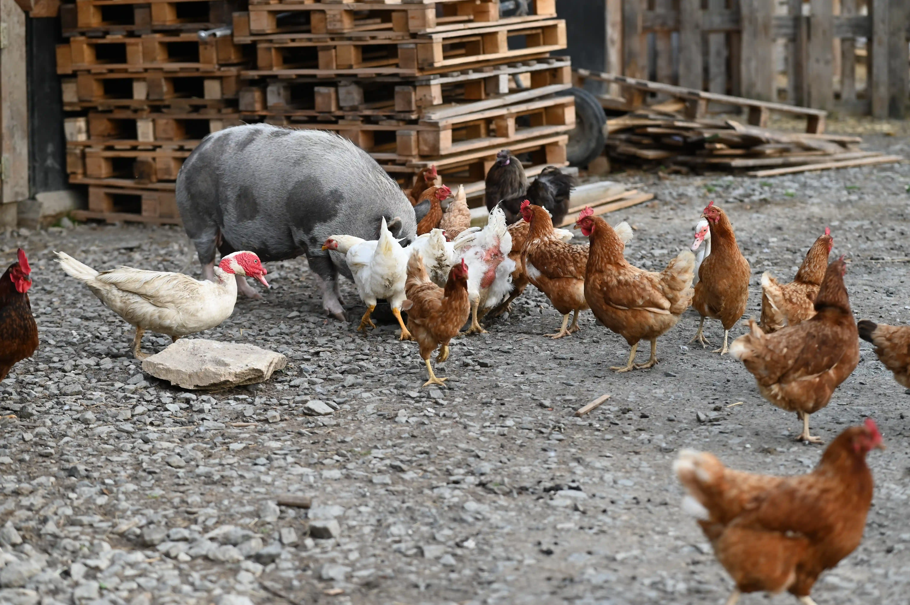
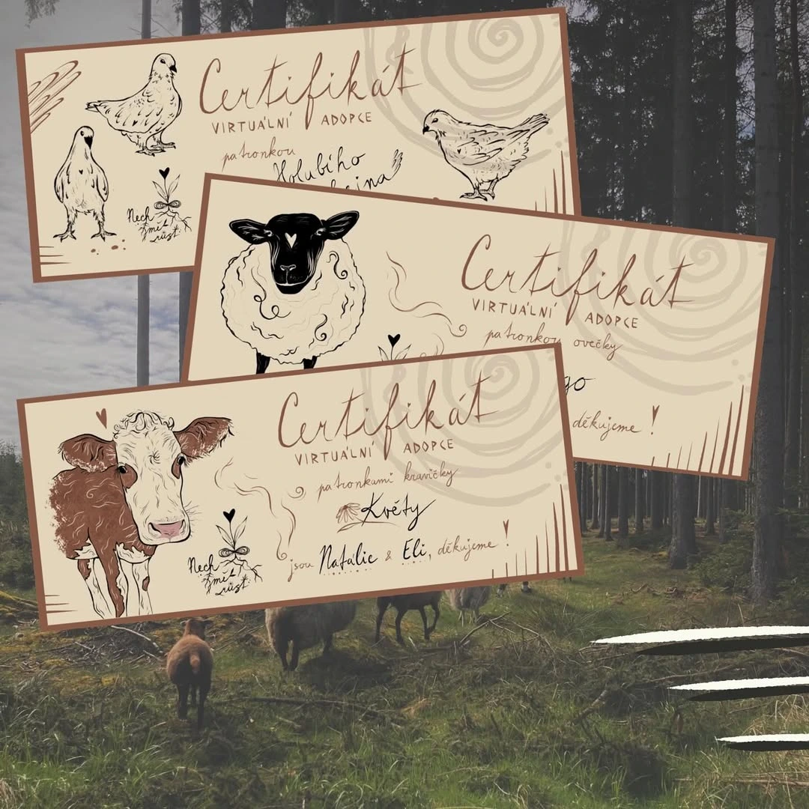

Virtuální adopce
Staňte se patronem zvířete, které si oblíbíte

Staňte se patronem
Pokud jste si vždy přáli mít doma například krávu či ovce, ale okolnosti vám to nedovolily, patronát představuje ideální příležitost, jak si alespoň částečně splnit tento sen. Věříme, že sny se mají plnit, a to nejen o Vánocích.
Jako patron budete mít možnost kdykoli navštívit zvíře, vzít ho na procházku nebo se s ním pomazlit. Tyto interakce jsou prospěšné jak pro vás, tak pro zvířata. V případě, že vám bude chybět přímý kontakt, můžeme vám zaslat aktuální fotografie či videa, abyste měli přehled o tom, jak se vašemu patronovanému zvířeti daří.

Proces patronátu
Výběr zvířete
Vyberte si zvíře, které vás zaujme.
Projev zájmu
Kontaktujte nás s projevem zájmu o patronát.
Nastavení trvalého příkazu
Nastavte trvalý příkaz na náš transparentní účet. Do poznámky můžete uvést, pro které zvíře je příspěvek určen.
Certifikace
Vystavíme vám certifikát potvrzující nabytí patronátu.
Do poznámky uveďte jméno zvířete, kterého chcete adoptovat.